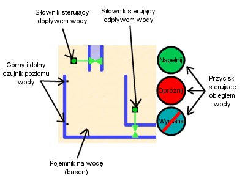

Lekcja 2
Celem lekcji drugiej jest zapoznanie siê z podstawowymi elementami u¿ywanymi podczas programowania sterowników PLC. Sterowaæ w niej bêdziemy systemem obiegu wody w basenie.
Po w³¹czeniu lekcji drugiej oczom naszym ukazuje siê "dydaktyczny" basen:

W centralnym miejscu znajduje siê rzeczony basen. Na wewnêtrznej stronie jego œcianki umocowane s¹ dwa czujniki, reaguj¹ce na wodê. Po prawej stronie znajduje siê rura odp³ywu, któr¹ mo¿na zamkn¹æ zaworem sterowanym si³ownikiem elektrycznym. Nad basenem znajduje siê rura wlotu wody, równie¿ zamykana podobnym zaworem.
Oba czujniki poziomu cieczy reaguj¹ na bezpoœredni kontakt z wod¹. Jeœli czujnik jest suchy, to na odpowiednim wejœciu sterownika jest stan "0". Jeœli czujnik jest pod wod¹, to na wejœciu pojawia siê stan "1".
Stan otwarcia lub zamkniêcia zaworu sygnalizowany jest poprzez lampkê kontroln¹ umieszczon¹ na si³owniku:
- zawór jest otwarty
- zawór jest zamkniêty
Obie rury maj¹ identyczn¹ przepustowoœæ wody, wiêc otwarcie obu zaworów na raz nie zmienia poziomu wody i zapewnia ci¹g³¹ wymianê wody na œwie¿¹.
Naszym zadaniem jest oprogramowanie przycisków znajduj¹cych siê po prawej stronie uk³adu wykonawczego. Dwa z nich ("Nape³nij" i "Opró¿nij") to przyciski astabilne, tzn. klikniêcie na którymœ z nich za³¹cza go tylko na czas trwania jednego cyklu sterownika. Trzeci przycisk ("Wymiana") to przycisk bistabilny - klikniêcie na nim prze³¹cza stany wciœniêty-wyciœniêty.
Aby u³atwiæ programowanie sterownika, w lekcji tej wprowadzone zosta³y nastêpuj¹ce symboliczne oznaczenia:
- CZUJ_GÓRA - czujnik u brzegu basenu
- CZUJ_DÓ£ - czujnik u dna basenu
- NAPE£NIJ - przycisk "Nape³nij"
- OPRÓ¯NIJ - przycisk "Opró¿nij"
- WYMIANA - przycisk "Wymiana"
- DOP£YW - si³ownik steruj¹cy dop³ywem wody
- ODP£YW - si³ownik steruj¹cy odp³ywem wody
Zadania do wykonania:
- Napisz program obs³uguj¹cy przycisk "Nape³nij", tak aby po jego wciœniêciu zaczê³a siê laæ woda. (U¿yj cewki S)
- Dopisz do poprzedniego programu zabezpieczenie reaguj¹ce na górny czujnik poziomu cieczy tak, aby woda siê nie przelewa³a przez brzeg.
- Uzupe³nij poprzedni program o obs³ugê przycisku "Opró¿nij". Spraw aby wylewana by³a woda z ca³ego basenu.
- Zmodyfikuj program tak, aby nie mo¿na by³o przerwaæ procesu nape³niania i opró¿niania basenu. Dopiero gdy poziom cieczy osi¹gnie jakiœ czujnik, proces zostaje przerwany.
- Dodaj obs³ugê prze³¹cznika "Wymiana". Jeœli basen nie jest aktualnie nape³niany lub opró¿niany, a przycisk jest za³¹czony, to niech zostan¹ otwarte oba zawory na raz (wymusza to ci¹g³y obieg œwie¿ej wody).
|